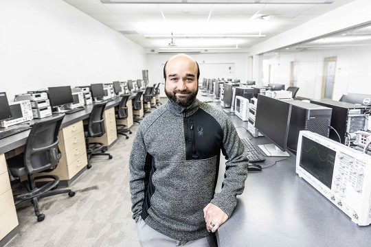
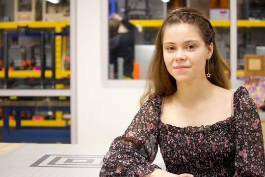
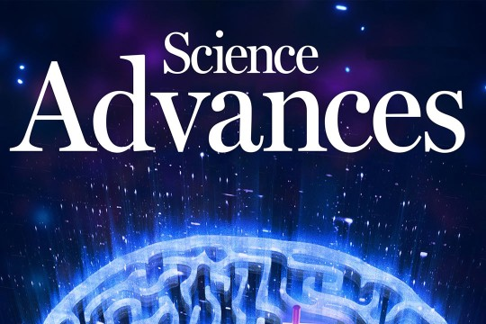
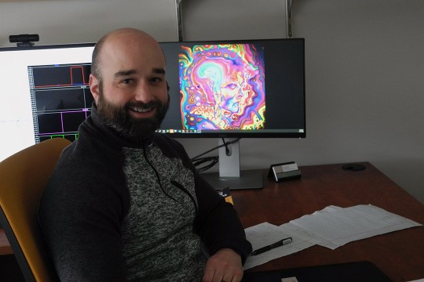
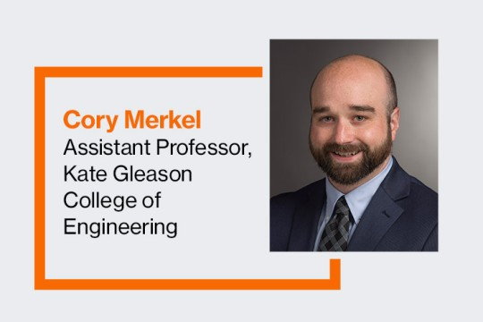

Manali Dangarikar to present at NAECON 2026
Manali Dangarikar will present her research, “Understanding fault tolerance of adversarially robust pruned models,” at the 2026 NAECON conference in Cincinnati.

RIT researchers build funding momentum
RIT researchers supported by internal and external funding sources help bring creative and innovative ideas to fruition.
→Machine learning predicts where the HHL quantum algorithm will pay off
Quantum Zeitgeist covers research by Sonia Lopez Alarcon and Cory Merkel, associate professors of computer engineering, with Mark Danza ’25 MS (computer engineering).
→
New research shows AI systems are getting closer to processing information like humans
RIT engineering professor Cory Merkel was one of more than a dozen researchers in neuromorphic computing contributing findings published on Jan. 22 in…
→
Student spotlight: Fulbright student’s research applies AI to real-world problems
Diana Velychko, a Fulbright master’s student in artificial intelligence, is paving the way for more intuitive artificial intelligence (AI) systems. Her work focuses on the intersection of human perception and AI, aiming to bridge the gap between how people see the world and how machines interpret it.
→
RIT professor proposes new way to make artificial intelligence smarter and greener
RIT Assistant Professor Alexander Ororbia published a paper on smarter and greener artificial intelligence in Science Advances.
→
Computer engineering faculty member joins national initiative on neuromorphic computing
RIT computer engineering faculty member contributes system testing expertise to USC’s Center of Neuromorphic Computing under Extreme Environments.
→Computer engineering becomes part of inaugural program focused on neuromorphic technologies
RIT recently became one of the inaugural academic partners in the BrainChip University AI Accelerator Program. As part of the partnership, RIT’s computer engineering program will receive hardware as well as lecture modules for classes detailing how the novel chips can be programmed and used to provide neuromorphic computing solutions to real-world problems.
→
Engineering faculty member wins Air Force Research grant for work in improvements to neuromorphic computing systems
Faculty-researcher Cory Merkel recently received a grant from the Air Force Research Lab for developing more secure AI functionality including how it defends against system attacks, and, through training the system, how it could learn to anticipate triggers for possible system attacks.
→